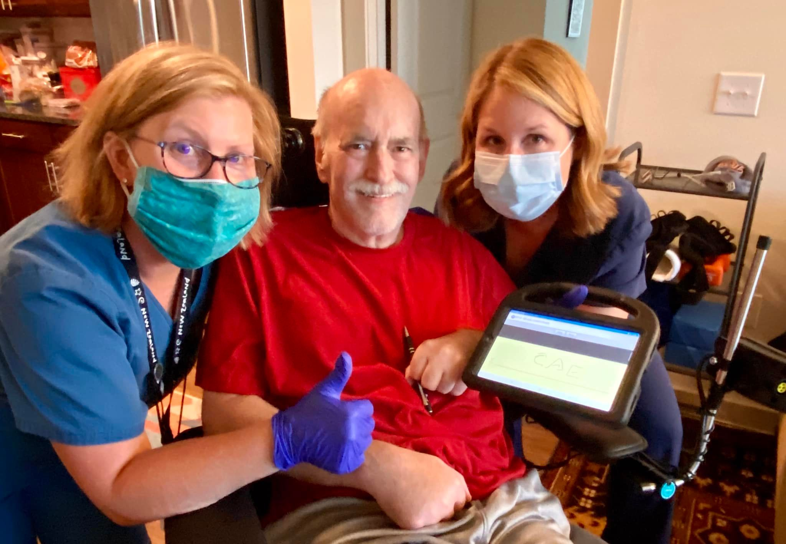
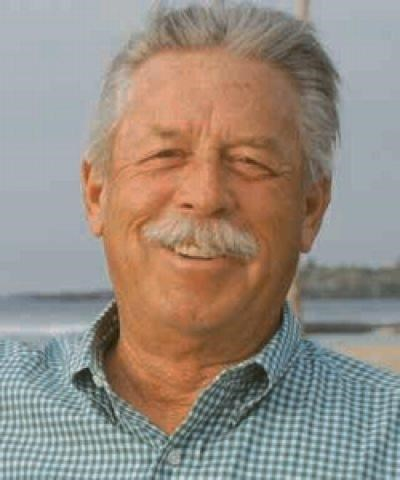

E-SYSTEMS/RAYTHEON RETIREES LUNCH GROUP
By Eileen Wahlstrom
July 27 – August 31 2022
Present: 23, 20
First Time: John Montgomery, Alvin Rauschhuber - July/ Phil Bedford - August
Long Time: Norm Dixon - July/ Cheryl Martin - August
Guests: None
SICKNESS:
Chris Ebling

Chris Ebling finished his last day of at-home PT, and moves on next week to the outpatient day therapy program, with us driving several days each week to Baylor Rehab in Dallas. He is making some good progress with movements, range of motion, and strength. Many other health issues can arise with a Spinal Cord Injury, and so far he is staying in great overall health. He is ready to roll on to the next stage, back at the gym.
Do you notice he initialed his own discharge report on the tablet?? Look at that smile!!
Thanks to the best PT and OT gals ever, Amy and Laura with Baylor Home Health. They have been faithful and encouraging partners. And they only cried just a bit when they left today. He always charms the ladies.
Bobby Gambrell: Wife Carolyn She has been hospitalized with heart problems for over a month now.
Hi, Carolyn can have visitors now Room # 314A. Please call 214 335 8130 to make sure she's in and not in therapy.
Beacon Harber 6700 Heritage Pkwy Rowlett 75087
Mucho Thanks,
Bobby G
Jesse Gilbert:

AUGUST 18th: Y'all say a prayer for my Uncle Jess please. He had heart surgery yesterday so he is on the road to recovery. This is my Papa Sam's brother but he is like my 2nd grandpa and the closest thing on this Earth to my Papa. I cherish this man with every ounce of my being. I love you so so much Uncle Jess! We're going to get you better. I'll make sure of it!
UPDATE AUGUST 28th: Just an update on the old codger: I went to town today, lunch at El Tapatio, Walmart (had to stop and rest 3 times while inside - 5 minutes in PU with AC on before my next stop). Stopped by the VA to discuss my prescription - no resolution. Stopped by State Farm to check on latest assessment of the damage to my property back in May - did not hear good news. Bought gas for my mower. Mailed a copy of my latest book to a friend in Dallas. Returned home and took part of my merchandise from Walmart into the house. Seems like I'm breathing through my left ear? Will rest a couple more hours and bring in rest of Walmart buy and put PU in the garage. "Time" has caught up with the old codger! Doctor says it may take a couple of months to dissolve the blood clots in my lungs and left leg. So, I carry on as best I can - but at a very slow pace!
Larry and Judy Judd Larry recently had a heart ablation performed. He is doing well. Judy was not feeling very good but it turns out her diabetic meds needed adjusting.
Bertha Hall : Recently celebrated her 92nd birthday and she reports that she has had to slow down a little!
Mickey Wahlstrom Had an emergency appendectomy on August 24th. Doctor’s orders to take it easy for three weeks. He’s getting better and antsy!
Deaths
Ron Pearson
1939-2022

Ron Son of Helen and Howard Pearson, Ronal Edward Pearson was born in Hampton, Tennessee, on October 3, 1939, and, after a brave fight against lung cancer, peacefully went to his eternal reward on June 24, 2022. His early years saw their challenges: the Great Depression, WWII, and poverty in pre-electrification East Tennessee. While his father fought in Europe, his mother worked in an ammunition factory, and he lived with his grandparents in a shared room on a farm. Perhaps because of the turbulence of that early environment, as an adult he demonstrated a remarkable level of reliability and stability. His entire life, he was a rock for family and friends.
At age 18, he enlisted in the Air Force. He served as a missile technician and was on silo duty during the Cuban Missile Crisis. Upon completion of his service, he paid for college using the GI Bill, and graduated with a degree in Electrical Engineering from the University of Tennessee. He was the first in his immediate family to graduate from college.
He then joined a defense technology firm that would eventually become part of Raytheon, a job he would have until retirement nearly 40 years later. He focused on the design and system engineering of top-secret computer mapping systems that served military aviation and intelligence agencies. While he chafed at the administrative requirements of government contracting, he was proud to be part of a team building new technologies and protecting his country.
His faith was deep, but not showy. He prayed silently and believed that the "Man Upstairs" just wants us to be honest and treat others with kindness. When we saw someone in unfortunate circumstances, he told us that "there but for the Grace of God go I." If we had reason to be angry with someone, he reminded us that "we are all God's children." He grew up with a love for hunting and was a proficient shot.
Later in life, he returned to his childhood passion and became an accomplished "single-action shooter," competing in numerous contests around the nation under the nom de guerre "Tennessee Star." One of his deepest regrets upon getting sick was that he would no longer be able to shoot competitively.
His other great passion was cars, particularly Corvettes. He rebuilt one (as well as a vintage MG) in the family garage, which was lined with tools and Chilton repair manuals. He loved the logic of putting things together and engineering high performance from raw materials. He also loved all kinds of racing, whether top fuel drag racers or NASCAR, and every Memorial Day weekend he could be found watching the Indianapolis 500.
He was slow to anger, never raising his voice, but quick to laugh. When he disagreed with you, he would be a quiet but firm voice of reason. He could say a great deal with the raise of an eyebrow.
He was preceded in death by his wife of 40 years, Diane, and is survived by his children, Jessica and Travis, his daughter-in-law Lisa Pearson, and his five grandchildren, Pearson and Hudson Pillsbury of Plano, and Audrey, Elle, and Grant Pearson of San Francisco. Our Pop Pop, our Superstar, you fought the good fight, you finished the race, you kept the faith. You will always be loved, remembered, and missed. In lieu of flowers, please consider a donation to the American Cancer Society.
Obituary: Click here
Carol Gangstead
1952-2022
(From Stacey and Steven)
Hello friends of Carol. With great sadness, we’re writing to announce that our mom passed away unexpectedly on July 29th at the end of her Alaskan adventure. Our thanks to all of you for contributing to the love and friendships that meant so much to her throughout her life. We’ll always miss her dearly. We are working through the process of getting Facebook to memorialize her page.
We’re hosting a Celebration of Life for her at the SpringPark clubhouse on Saturday August 13, 2022 from 2-5pm. It will be come and go to visit with friends and family and share your best Carol stories. If you have any questions please contact us.
Steven Gangstead and Stacey Gangstead Richardson
Thomas Swank
1981-2022
We have lost a young Raytheon engineer far too soon. Thomas Swank passed away unexpectedly last week after complications from a final surgery to remove the last of a tumor. He had only found out about the tumor this past October, just after his 40th birthday.
I asked his sister if I could share her post from his Facebook page (with the obituary and funeral service) to this group since many of you probably worked with him (or his mother Sherry) or he worked for you. Thomas worked for me on my team when he was fresh out of college (Texas Tech - MY college too). He always loved that we had that in common and we’d talk about Tech and Lubbock a lot. I was a mentor to him as he learned the ropes at work and he always knew he could vent to me. I worked with his mother, Sherry as well. He also worked for my husband (Rusty) over the years at some point, and then he worked with my son when HE started working at Raytheon. Thomas was a very smart, nice, and funny young man.
Raytheon has lost a smart, dedicated engineer. We have lost a good co-worker and even more, a good friend
We should Appreciate our retirement and respect our age. Some, like Thomas, will never get that chance.
Rest In Peace Thomas
Here is what JENNY SWANK (his sister) said on Thomas’s FB page
To all of our friends, families, and meaningful acquaintances:
It is with immense grief and sorrow that I share my brother’s obituary with you all. We have all been so incredibly blessed to have had him touch our lives in the ways only he could. There are so many more thoughts, feelings, and memories I want to share in honor of Tommy’s life, and in time I will. Please join us as we grieve, honor, and celebrate his life
I encourage all of you to take care of yourselves and each other as we find our way through such an unreal and tragic loss. I love you, Tommy
OBITUARY:
Thomas Benjamin Swank of Plano, Texas passed away Friday, July 1, 2022. Thomas was born October 11, 1981 in Topeka, Kansas and moved to Plano, Texas with his family in August 1984. As a child he showed interest in computers and building Lego structures. He attended PISD schools for elementary and secondary education, graduating from Plano East High School in 2000. At PESH he excelled in Advanced Placement (AP) courses and the PESH band. He took his acquired skills in Math, Science and Music to Texas Tech University where he majored in Computer Engineering and participated in the “Goin’ Band From Raider Land” marching band. Thomas graduated in 2004 with university and department honors and immediately went to work for Raytheon where he was still employed as a Software Technical Lead at the time of his death.
Thomas had a keen mind and outstanding memory. He loved sports and could recite player information of his favorite teams, past and present: the Kansas University basketball teams, Texas Tech football, basketball, and baseball teams, Kansas City Chiefs, Texas Rangers, and Dallas Mavericks, as well as other teams and players. He enjoyed attending games with family and friends.
Thomas was a product of two states having been born in Kansas and living most of his life in Plano. He kept close contact and relationship with his relatives in Kansas and friendships in Texas. He is survived by his parents, Gregory (Gregg) Howard and Sherri Lin (King) Swank of Plano, his sister, Jennifer Leann Swank of Bourbonnais, Illinois, his grandmothers, Beverly Jean (Bardsley) Peaslee of Plano and Sharon King of Topeka, and many aunts, uncles, and cousins.
Thomas was a kind, gentle, loving child and young man with a sensitive and compassionate soul, who took pride in the work he did to strengthen his nation’s defense, who loved his God, his country, his state, and his family and friends. He was loved and is missed.
A funeral service will be held at 10:00 a.m., July 8, 2022 at Custer Road United Methodist Church, 6601 Custer Road, Plano, Texas 75023. Following the service a procession will make its way to Ridgeview Memorial Park in Allen, Texas for interment.
Donations in Memory of Thomas may be made to the
University of Texas Tech “Whitacre College of Engineering Fund for Excellence
Obituary: Click here
Announcements
From Christine Berry
Just passing on an email I received regarding the chairs for 35+ years retirees…
I will be your contact person at Standard Chair from now on.
To process this order, we need a purchase order from Raytheon.
About a month ago, I took over the task of organizing and processing all Raytheon retiree orders.
We were able to obtain a primary contact to receive purchase orders.
Your order is on Summary B2. We are currently waiting on a PO for Summary B1.
Once I receive the PO, your order will be processed, and you will be assigned a ship date.
If you do not hear from me by September 23, 2022, with your ship date please contact me.
Our standard shipping once we receive the purchase order is 4-6 weeks.
Please know I’m working diligently to process and ship over 500 in-house Raytheon retiree orders.
We apologize for the delay and any inconvenience this has caused.
**We have processed and received ship dates for 100s of retirees.
**If you know a retiree that has been waiting for their chair and hasn’t received any information, please give them my contact information.
Thank you,
Suzanne Pelkey, Customer Service Representative
Standard Chair of Gardner Inc
One S Main Street Gardner, MA 01440
978-632-1301 Phone
978-632-1345 Fax
Suzannep@standardchair.com

Medical Claims for reimbursement can be mailed to:
Alight Smart Choice Solutions
PO Box 64009
The Woodlands, TX
77387
Paper Pension Statements No More
NOTE:
Paper pension statements will not be mailed out any longer. You must now view your pension statement on rtxpensioncenter.com. If your direct deposit looks off, better check. Some people have reported being double charged for their medical deductions (Dental, etc.).
Benefits Administrator Change
This info was posted on our Facebook group.
Alight has a benefits "Gateway" website that will be used for benefits administration. If you haven’t created an account yet you can use this link to do so, (https://rtxhealthyyou.com/enrollment-2"). The instructions indicate to go to www.yourtotalrewards.com/rtx and select "New user?". The "New user?" selection links to a couple of identifying questions and then steps you through the account setup. It recognized me and I was able to set up my account so I could create my profile and preferences. There’s also an online chat feature to talk with a benefits representative and find out additional details about benefits changes. They had my old employee email address in my profile and I had to call Alight to get that corrected (800-243-8135). Be sure to check your beneficiary information. This was blank for me so I corrected that.
Alight will manage the medical reimbursement and (if it works like intended) we will be able to check our DDB balance, submit claims, authorize direct deposit, etc. online.
RTX is also moving the 401K administration from Fidelity to Alight. The 401K change to Alight will not impact you if you've rolled over your 401K to personal IRA. www.yourtotalrewards.com
IF YOU NEED HELP SETTING UP YOUR ALIGHT ACCOUNT, REIMBURSEMENT CLAIMS, DIRECT DEPOSIT, ETC. PLEASE EMAIL ME AT emmawahlstrom@aol.com. TERRY GAUS HAS OFFERED TO HELP THE RETIREES WHO MAY HAVE QUESTIONS. I CAN ALSO HELP NAVIGATE THE SWAMP IF YOU NEED ASSISTANCE.
Our next luncheon will be September 28th. Tell your fellow retirees! Bring a Guest!!!
I will resume collecting eye glasses for donation to the Lion’s Club.
Thank you all who have donated
Eileen Wahlstrom
 Submit your Garland ESY/Raytheon stories now!!
Submit your Garland ESY/Raytheon stories now!!


ESY Ray